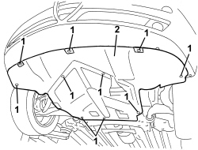

7055B54 UNDER ENGINE PROTECTION/GUARD - R.R.
- Path
- Procedures > 70 FITTINGS > 7055 MOULDINGS AND PROTECTION > 7055B EXTERIOR PROTECTIONS > 7055B54 UNDER ENGINE PROTECTION/GUARD - R.R.
- Kind
- repair procedure (removal / refitting; the operation number is the code)
- Applies to
- all engines; all production periods
- Interactive page
- https://sloeber94.github.io/elrnDB-aBrrSpdr/en/#/946002682
Applies to: all engines; all production periods
 Removing
Removing
 Refitting
Refitting- Position the vehicle on a lift.
- Raise the vehicle.
1. Undo the bolts.
2. Remove the shield under the engine.

Applies to: all engines; all production periods
Refitting
Removing- Check that the under-engine guard is not damaged.
- Fit the under-engine guard and tighten the bolts.
- Remove the vehicle from the lift.
Topics that link to this page (142)
- H005 POOR DRIVING COMFORT - AT FRONT
- S018 FRONT SUSPENSION NOISE (KNOCKING)
- T010 PASSENGER COMPARTMENT WIND NOISE, LOWER AREA (UNDERBODY)
- 0010T20 ENGINE COOLANT - CHANGE
- 0010T41 MANUAL GEARBOX OIL CHECK LEVEL AND TOP UP IF NECESSARY
- 0010T44 CHANGE AUTOMATIC TRANSMISSION FLUIDS
- 0010T45 AUTOMATIC TRANSMISSION FLUID CHECK LEVEL AND TOP UP IF NECESSARY
- 0010T51 GEAR DRIVE IDLER UNIT OIL - REPLACE
- 0010T52 GEAR DRIVE IDLER UNIT OIL - CHECK LEVEL AND TOP UP, IF NECESSARY
- 0010T82 DIESEL SYSTEM - BLEED WATER FROM DIESEL FILTER RESEVOIR
- 1004B10 POWER UNIT WITH MANUAL GEARBOX - R.R
- 1004B14 POWER UNIT WITH AUTOMATIC TRANSMISSION R + R
- 1004B24 POWER UNIT WITH MANUAL GEARBOX WITH HYDRAULIC SELECTION - R.R.
- 1008A42 POWER UNIT RIGID SUPPORT - GEARBOX SIDE - R.R.
- 1008A44 POWER UNIT REAR RIGID SUPPORT - R.R.
- 1008B30 GEARBOX SIDE SUPPORT FLEXIBLE MOUNTING(S) - REPLACE
- 1008C30 POWER UNIT LOWER REACTION LINK - R.R.
- 1008C32 GEARBOX LOWER REACTION ROD -R.R.
- 1008C34 BRACKET ON GEARBOX FOR LOWER REACTION ROD - R.R.
- 1020A26 CRANKCASE SUMP - R.R CLEAN MATING SURFACES AND APPLY SEALANT FOR VEHICLES WITH AIR CONDITIONING
- 1020A30 ENGINE OIL DRAIN PLUG - REPLACE
- 1048B14 AIR DELIVERY HOSE BETWEEN TURBOCHARGER AND HEAT EXCHANGER - REPLACE
- 1048B20 AIR SUPPLY HOSE FROM HEAT EXCHANGER TO RIGID PIPE - REPLACE
- 1048B22 AIR SUPPLY HOSE FROM HEAT EXCHANGER TO INTAKE MANIFOLD - R + R
- 1048B50 INTERCOOLER - R + R
- 1060G20 ENGINE RPM SENSOR - R.R.
- 1064A22 VARIABLE GEOMETRY TURBOCHARGER R R
- 1072C40 LEFT EXHAUST MANIFOLD HEAT SHIELD - R.R.
- 1072C44 EXHAUST MANIFOLD HEAT SHIELD - R+R
- 1076B12 EXHAUST PIPE ASSEMBLY R R
- 1076B18 RIGID SECTION OF EXHAUST PIPE BETWEEN CATALYTIC CONVERTER AND SILENCER - R + R
- 1076B20 REAR EXHAUST SILENCER - R + R
- 1076B72 INTERMEDIATE EXHAUST PIPE WITH HOSE SECTION - R+R
- 1076B82 LEFT EXHAUST PIPE BETWEEN CATALYTIC PRECONVERTER AND CONVERTER - R.R.
- 1080B93 RIGHT UPPER LAMBDA SENSOR - R.R.
- 1080B96 LEFT REAR LAMBDA SENSOR ON CATALYTIC CONVERTER - R.R.
- 1080B97 RIGHT REAR LAMBDA SENSOR ON CATALYTIC CONVERTER- R.R.
- 1080B62 CATALYTIC CONVERTER - R + R
- 1080B64 CATALYTIC CONVERTER EXCESS TEMPERATURE THERMOCOUPLE - R + R
- 1080C83 EXHAUST GAS INLET PIPING FROM EXHAUST MANIFOLD TO HEAT EXCHANGER EGR - R R
- 1084A16 OIL DIPSTICK PIPE - R.R
- 1084A40 ENGINE OIL LEVEL SENSOR - R + R
- 1084A42 ENGINE OIL PRESSURE WARNING LIGHT SWITCH - R + R
- 1084B34 CARTRIDGE ENGINE OIL FILTER SUPPORT - R + R
- 1084B40 ENGINE OIL DELIVERY PIPE TO TURBOCHARGER - R + R
- 1084B42 ENGINE OIL RETURN PIPE FROM TURBO - R + R
- 1084C10 ENGINE OIL HEAT EXCHANGER - R + R
- 1084C15 ENGINE OIL HEAT EXCHANGE MOUNT R R
- 1084C29 FRONT ENGINE OIL DELIVERY PIPE TO COOLING RADIATOR - R. R.
- 1084C31 FRONT ENGINE OIL RETURN PIPE FROM COOLING RADIATOR - R. R.
- 1084C33 REAR ENGINE OIL DELIVERY PIPE TO COOLING RADIATOR - R. R.
- 1084C34 ENGINE OIL COOLING RADIATOR - R + R
- 1084C35 REAR ENGINE OIL RETURN PIPE FROM COOLING RADIATOR - R. R.
- 1088B20 ENGINE COOLING RADIATOR - R + R
- 1088C40 THERMOSTAT- R + R
- 1088D06 THREE-WAY CONNECTOR BETWEEN RADIATOR AND THERMOSTAT
- 1088D10 RADIATOR COOLANT OUTLET HOSE - R.R.
- 1088D14 UPPER RADIATOR COOLANT INLET HOSE - R.R.
- 1088D24 WATER PUMP RIGID COOLANT INLET PIPE - R.R.
- 2130A38 AUTOMATIC TRANSMISSION FLUID HEAT EXCHANGER - R + R - INCLUDING LEVEL TOP UP IF NECESSARY
- 2130A40 COOLANT SUPPLY PIPE TO AUTOMATIC TRANSMISSION FLUID HEAT EXCHANGER - R.R.
- 2130A42 WATER SUPPLY/RETURN PIPES TO HEAT EXCHANGER - R.R.
- 2130A44 AUTOMATIC TRANSMISSION FLUID HEAT EXCHANGER COOLANT RETURN PIPE - R.R.
- 2130A45 RIGID PIPE FROM THERMOSTAT TO HEAT EXCHANGER - R.R.
- 2130A61 AIR DUCT ON AUTOMATIC TRANSMISSION - R.R.
- 2130B36 AUTOMATIC TRANMISSION VALVE COVER R R
- 2130B37 OIL INLET COVER ON AUTOMATIC TRANSMISSION VALVE ASSEMBLY
- 2130B40 GEAR SELECTION SOLENOID UNIT - R R
- 2130B69 AUTOMATIC TRANSMISSION ENGINE BRAKE ON/OFF SOLENOID VALVES - R.R.
- 2130C36 OIL SEAL FOR LH DIFFERENTIAL SHAFT - R R
- 2135B58 ELECTRONIC AUTOMATIC TRANSMISSION SYSTEM WIRING - R.R.
- 2127C10 SUPPORT FOR ELECTROHYDRAULIC CIRCUIT RESERVOIR AND SYSTEM PUMP - R.R.
- 2127C12 HYDRAULIC GEAR SELECTION FLUID RESERVOIR - R.R.
- 2127C20 PIPE FROM PUMP TO HYDRAULIC SPEED SELECTION ACTUATOR UNIT - R.R.
- 2127C22 PIPE FROM HYDRAULIC SPEED SELECTION ACTUATOR UNIT TO FLUID RESERVOIR - R.R.
- 2127C24 PIPE FROM SOLENOID VALVE ASSEMBLY TO MASTER CYLINDER FOR ELECTROHYDRAULIC SELECTION GEARBOX - R.R
- 2127C40 HYDRAULIC SPEED SELECTION HYDRAULIC ACTUATOR UNIT AND CLUTCH - R.R.
- 2127C44 PRESSURE ACCUMULATOR ON HYDRAULIC ACTUATOR UNIT - R.R.
- 2127C45 CLUTCH OPERATING CYLINDER, OF ELECTROHYDRAULIC SELECTION - R.R .
- 2127C52 ODD AND EVEN GEAR ENGAGEMENT SOLENOIDS - R.R.
- 2127C54 GEAR SELECTION SOLENOIDS - R.R.
- 2127C56 CLUTCH CONTROL SOLENOID - R.R.
- 2127E10 HYDRAULIC SPEED SELECTION SYSTEM CONTROL UNIT - R.R.
- 2127E40 HYDRAULIC SELECTION GEARBOX SPEED SELECTION POSITION SENSOR - R.R.
- 2127E42 HYDRAULIC SELECTION GEARBOX SHIFT POSITION SENSOR - R.R.
- 2127E50 HYDRAULIC SELECTION GEARBOX CIRCUIT PRESSURE SENSOR - R.R.
- 2127E52 HYDRAULIC SELECTION GEARBOX INPUT SHAFT SPEED SENSOR - R.R.
- 2127E94 WIRING FOR MANUAL GEARBOX HYDRAULIC SELECTION SYSTEM ON HYDRAULIC SELECTION UNIT - R.R. OR REPLACE
- 2410D31 ALIGNMENT AND ANGLE ADJUSTMENT FOR DRIVE TRANSMISSION COMPONENTS - CHECK WITH SPECIAL TOOLS
- 2710A10 DRIVESHAFT WITH JOINTS (ONE), L/H OR R/H - R + R
- 4130B31 ONE POWER STEERING PUMP SUPPLY PIPE INTERMEDIATE RIGID JOINT R R
- 4130B36 SUPPLY PIPE FROM FLUID RESEVIOR TO POWER STEERING PUMP INLET PIPE - R.R.
- 4130B38 POWER STEERING PUMP INLET PIPE FROM FLUID RESEVIOR PIPE OR INTERMEDIATE RIGID PIPE - R.R.
- 4130B40 SUPPLY PIPE FROM PUMP TO POWER STEERING BOX - R.R.
- 4130B41 SUPPLY PIPE FROM PUMP TO POWER STEERING BOX - R.R. FOR RIGHT HAND DRIVE VERSIONS
- 4130B43 RETURN PIPE FROM POWER ASSISTED STEERING BOX TO HEAT EXCHANGER - R.R.
- 4130B45 RETURN PIPE FROM HEAT EXCHANGER TO POWER ASSISTED STEERING FLUID RESERVOIR - R.R.
- 4130B52 HEAT EXCHANGER PIPE - R+R
- 4130B70 INTERMEDIATE RETURN PIPE BETWEEN POWER STEERING BOX AND POWER STEERING FLUID HEAT EXCHANGER COOLING RADIATOR - R.R.
- 4130B72 REURN PIPE FROM POWER STEERING BOX TO INTERMEDIATE PIPE - R.R.
- 4130B76 RETURN PIPE FROM POWER STEERING CASE TO POWER STEERING FLUID RESEVIOR R R
- 4130B98 POWER ASSISTED STEERING FLUID COOLING RADIATOR - R.R.
- 4410B40 LOWER TRACK CONTROL ARM (WITH BALLJOINT) FOR LEFT OR RIGHT FRONT SUSPENSION (ONE) - R+R - CHECK WHEEL GEOMETRY SEPARATELY
- 5010A12 HEATER WATER SUPPLY PIPE - R.R.
- 5010A16 HEATER WATER RETURN PIPE - R.R.
- 5040A20 AIR CONDITIONING COMPRESSOR - R+R - INCLUDES FLUID LEVEL CHECK AND TOP UP IF NECESSARY
- 5040A26 AIR CONDITIONING COMPRESSOR SUPPORT - R.R.
- 5040A40 AIR CONDITIONING CONDENSER - R+R
- 5040A44 AIR CONDITIONING DRIER FILTER/ACCUMULATOR - R+R
- 5040A81 PIPE FROM EXPANSION VALVE TO CONDENSER AND COMPRESSOR FILLING R R
- 5040A82 PIPE FROM COMPRESSOR TO CONDENSER AND EXPANSION VALVE FITTING R R
- 5040B14 AIR CONDITIONING SYSTEM MULTISTAGE PRESSURE SWITCH - R+R
- 5050A10 WINDSCREEN WASHER FLUID RESERVOIR (IN ENGINE COMPARTMENT) - R+R
- 5050A11 WINDSCREEN WASHER FLUID RESERVOIR SUPPORT - R. R.
- 5050A16 WASHER FLUID LEVEL SENSOR - R R
- 5050D08 HEADLAMP WASHER JET/S - R.R.
- 5050D13 HEADLAMP WASHER SYSTEM PIPES AND CONNECTORS - R.R.
- 5050D15 OUTLET PIPE FROM HEADLAMP WASHER SYSTEM ELECTRIC PUMP - R.R.
- 5505C02 WIRING BUILT INTO FRONT BUMPER - R.R.
- 5510C44 DETONATION SENSOR (ONE) - R+R
- 5520B10 STARTER MOTOR - R+R
- 5530A10 ALTERNATOR - R+R
- 5530A52 ALTERNATOR COOLING FAN - R.R.
- 5530A53 FRONT ALTERNATOR COOLING PIPE - R.R.
- 5530A55 REAR ALTERNATOR COOLING PIPE - R.R.
- 5540B16 FRONT LIGHT CLUSTER TRIM (ONE), LEFT OR RIGHT - R.R.
- 5540B17 EXTERIOR LIGHT DIMMER HEADLAMP RESISTOR - R+R
- 5540B70 LEFT FRONT LIGHT CLUSTER WITH DIRECTION INDICATOR - R.R.
- 5540B71 RIGHT FRONT LIGHT CLUSTER WITH DIRECTION INDICATOR - R.R.
- 5540B81 LEFT GAS DISCHARGE LIGHT CLUSTER - R.R.
- 5540B82 RIGHT GAS DISCHARGE LIGHT CLUSTER - R.R.
- 5540D10 L/H OR R/H FOG LIGHT (ONE) - R+R
- 5540D14 L/H OR R/H FOG LIGHT BULB (ONE) - R+R
- 5550B30 L/H OR R/H HORN (ONE) - R+R
- 7025A28 BONNET LID OPENING CABLE - R R
- 7055A40 RADIATOR BADGE - R.R.
- 7055B08 GRILLE (ONE) ON FRONT BUMPER - R.R
- 7055B74 FRONT BUMPER SIDE MOUNT (ONE) LEFT OR RIGHT R R
- 7210A15 R.R. FRONT WING/HEADLAMP HOUSING CROSSMEMBER
- 7210A18 R.R FRONT CROSSMEMBER
- 7210E10 R.R. FRONT BUMPER
- 7210E18 R.R. FRONT WING